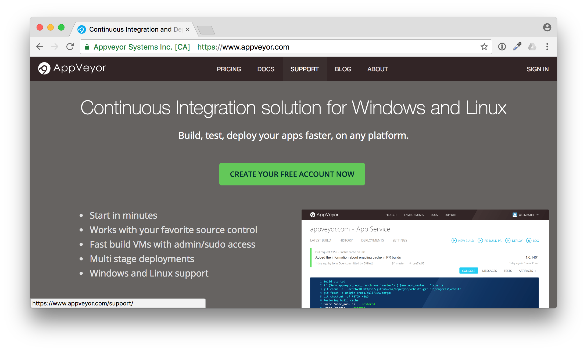

Maybe you find an interesting project on GitHub and want to build it your own. How can you do that? Maybe the project is written in a programming language that you are not familiar with. Or it uses a lot of tools to build that you don't have locally. Of course you have hear of Docker to put all build tools and dependencies into a container. But what if the project doesn't provide a Dockerfile?
Sometimes it is easier to just look at the repo. Does it have some green build badges in the README.md? That is a good first hint that they use a CI pipeline. Look for YAML files that show you which CI service the project uses.
I'll show you an example with one of my GitHub repos. This project builds a Docker image with a simple web server, it's written in Golang, bla bla bla...
The point is, there is a CI pipeline for AppVeyor and the corresponding YAML file also is in my repo. Let's have a look how you can fork my repo and fork the build pipeline.
What is AppVeyor?
The GitHub market place shows a lot of offerings for continuous integration. This is what you normally want to have automatic tests for each Git commit or pull request you receive.

AppVeyor is my #1 place to go if I want Windows builds. It is really easy to attach it to your GitHub repo with a YAML file.
It can be as simple as this example appveyor.yml file.
version: 1.0.{build}
image:
- Visual Studio 2017
build_script:
- ps: ./build.ps1
test_script:
- ps: ./test.ps1
deploy_script:
- ps: ./deploy.ps1
Forking build pipelines
What is the advantage to write a YAML file you may ask. Well I really like to share not only my code, but also my pipeline with the community. Others can fork my repo and only need a few clicks to attach the fork and have the complete pipeline up and running for themselves.
Whoami example
In the next screenshots I will show you how easy it is to setup a build pipeline for a repo that you have seen the first time.
Go to the GitHub repo https://github.com/StefanScherer/whoami.
You can fork it to your own GitHub account with the "Fork" button. GitHub will prepare the fork for you.
Now scroll down to the README.md. The next thing is to attach the pipeline to your fork.
Just click on the the AppVeyor build badge to jump to the AppVeyor site, maybe open a new tab as we need the GitHub site later as well.
Now you can see the build status of my repo. This is not your fork yet, but we now can sign in to AppVeyor.
Click on "SIGN IN" in the top right corner. AppVeyor will ask you how to sign in. Just use GitHub.
Now GitHub will ask you if you want to give AppVeyor read-only access to your user data and public teams.
After that you have connected AppVeyor to your account.
Now this has to be done only once. After that you can add the forked repo to build on AppVeyor. Click on "NEW PROJECT" in the top left corner.
You can choose between several version control systems. As you have forked a GitHub repo, click on "GitHub" and then on "Authorize GitHub".
AppVeyor needs some more access rights to add the Web hook for you and to send commit statuses. Click on "Authorize appveyor" to grant access.
Now you will see a list of GitHub repos of your GitHub account.
Move to the "whoami" repo and click on the "+ Add" button on the right side. The UI isn't the best here, I often missed the Add link for my first projects.
Congratulations! You have the build pipeline up and running. No VM's to setup, no installation required. You didn't have to clone the repo to your local machine yet.
Each Git commit will now trigger a build on AppVeyor with the appveyor.yml file that comes with the sources in the GitHub repo. You don't have to think what steps you have to do to build this project.
Adjust the fork
Adjust README.md
The first change should be to adjust the build badge in the README.md to link to your forked build.
Let's do that in the browser, so you still don't have to clone the repo to you local machine.
But first we have to grab the build badge link. Go to "Settings" and then to "Badges". You will see some samples, pick the Sample Markdown code
Now head over to the GitHub browser tab and edit the README.md file.
In this editor paste the new build badge link. Also adjust the Docker Hub badge to point to your desired Docker Hub image name. After that scroll down and commit the changes.
Head back to AppVeyor and you will see your first build running.
Isn't that fantastic? You just triggered a build from your browser. You can follow the build (it's a matrix build, we will have a closer look in the next blog post).
After a while the build is green.
Adjust deploy.ps1
The second change in the forked repo is to adjust the Docker image name to deploy it to Docker Hub for when you start a GitHub release build.
Head over to GitHub browser tab and edit the deploy.ps1 script.

In line 8 you have to adjust the $image variable to fit your needs.
After that commit the changes, a second build will be triggered. But nothing more happens in the second build.
Tell me a secret
The appveyor.yml is configured to deploy the Docker image only during a release build. For such releases AppVeyor needs access to your Docker registry you want to push to. In our case it's the Docker Hub.
This is done with secret environment variables. You can either use secrets in the appveyor.yml or just edit the environment variables in the AppVeyor browser tab. I'll show you the latter how to do it.
Go to "SETTINGS" and click the "Environment" tab. We need to add two environment variables
- DOCKER_USER
- DOCKER_PASS
Then scroll down and click on "Save". This is the second thing that could be improved in the UI. You often don't see this "Save" button.
If you don't like to add your real Docker Hub account a good practise is to use another Docker Hub account for just the pushes and grant that account write access to only the Docker Hub images you want to.
Release it!
Now, the build pipeline is set up in AppVeyor, as you have seen, the build and minimal tests were green. Now it's time to release the first Docker image.
Go to your forked GitHub repo again. There is a link to the "releases". Click on "releases".
You have forked all the tags, but not the releases. Now let's "Draft a new release" to trigger a build.
Use for example "2.0.0" as new release and tag name, enter some useful description.
Then press "Publish release". This also triggers a new build in AppVeyor, this time a tagged build.
In AppVeyor you can see the tag name "2.0.0"
You now also can follow the build, but I'll explain it in more detail in the next blog post. After some minutes the build is completed and green.
Now, do we really have a Docker image pushed to Docker Hub? Let's check. Go back to your GitHub repo and check if the Docker Hub badge also works.
And yes, there it is. You have successfully published a Docker image from an application you don't really have to understand the language or how to setup the build steps for that.
That's the "let me do it" first approach. Now you have time to look at all the files. Start with the appveyor.yml, the YAML is the start of the build pipeline.
Or start with the application code which is written in Golang.
TL/DR: Share your YAML
In this blog post you have seen how important it is to share not only the code, but also the build pipeline. You have learned to watch out for YAML files. There are other CI services out there, but the pattern is almost the same. Look for .travis.yml, .circleci/config.yml and similar names.
If you liked this blog post please share it with your friends. You can follow me on Twitter @stefscherer as well.